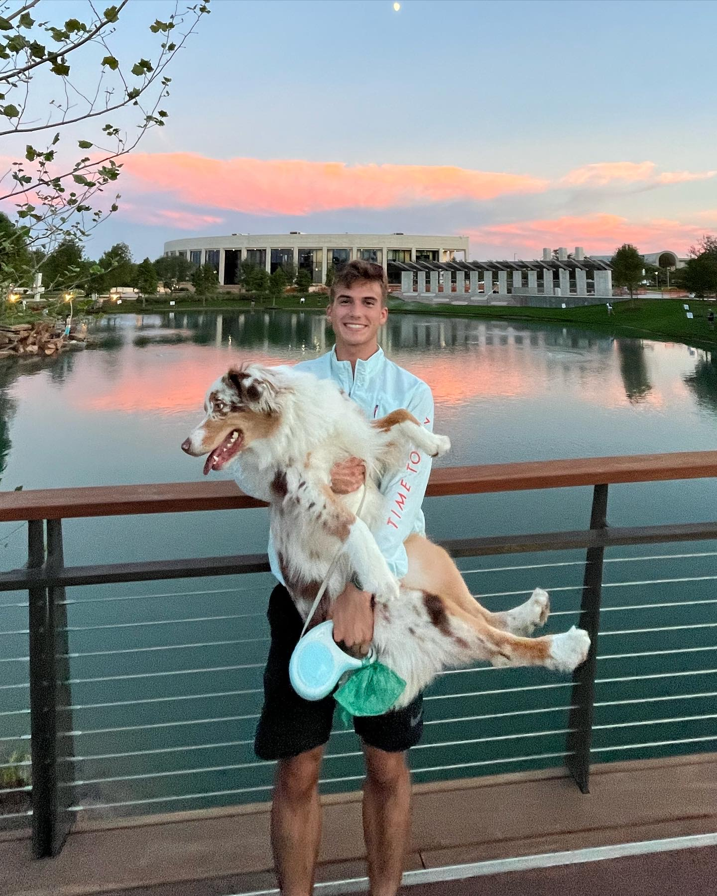
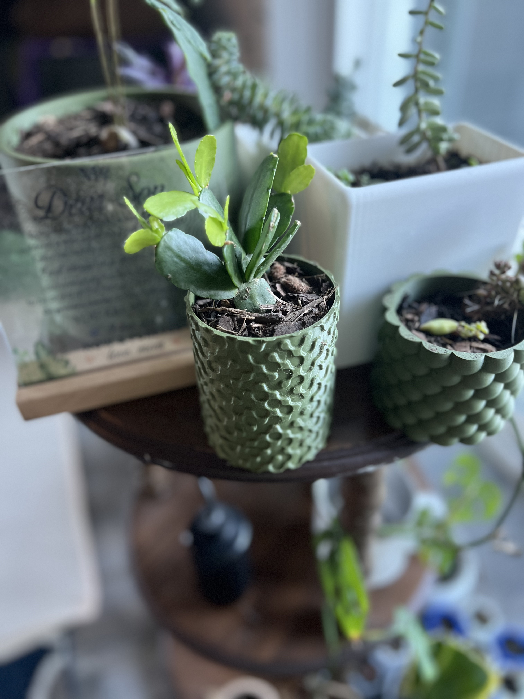

Francesco Romano
Research Engineer · Autonomous Systems · AI Safety
I build autonomous mission planning systems, multi-robot coordination protocols, and ML pipelines for defense applications on the DARPA ALIAS program. I think about how to make advanced AI systems safe, and I build the tools to test that in the real world.

About
Research Engineer at the Bush Combat Development Complex / RELLIS Autonomous Systems Lab at Texas A&M, working on DARPA-funded autonomous systems. Current work centers on the ALIAS program—interfacing AI planners with UH-60 Black Hawks for unmanned wildfire suppression—and building a Semantic World Model for multi-robot task allocation and mission execution.
MS and BS in Computer Science from Texas A&M and EIU. BA in Economics. Former NCAA D1 distance runner—2023 SEC Champion, 2019 USATF U20 Championship finalist in the 3000m steeplechase.
I care about AI safety, building things that last, and working where autonomous systems meet the physical world.
Publications & Working Papers
The Shape of the Attractor
A formal argument that sufficiently intelligent systems converge on cooperative equilibria. Dissolves Hume's guillotine through RL/GA framing, inverts the orthogonality thesis via modus tollens, and reframes alignment as an attractor in value-space rather than an external constraint. Connects evolutionary moral economics to multi-agent coordination theory.
Capabilities
Autonomous Systems
ROS2, Nav2, TAK/ATAK, multi-robot coordination, graph-based mission planning, ontological world models, sensor fusion
ML & AI
PyTorch, TensorFlow, LLM deployment & eval, terrain classification, Monte Carlo methods, uncertainty quantification
Systems & Infra
Docker, Linux, multi-GPU clusters (A100), AWS, GCP, Nginx, lidar processing, 3D mapping, CUI environments
Software Engineering
Python, C++, Java, JavaScript, SQL, React, Flask, full-stack web applications, data pipelines at scale
Projects

Semantic World Model
Ontology-driven environment representations integrated with graph planners for autonomous multi-robot mission planning. Core architecture for DARPA ALIAS.
Autonomous Wildfire Suppression
Interactive manned vs. autonomous helicopter simulator with Monte Carlo economic analysis of cloud seeding risk mitigation.
Terrain Classification
DeepLabV3+ with MC Dropout uncertainty quantification, fusing NAIP imagery and USGS 3DEP elevation data for autonomous ground vehicle navigation.
Multi-Radio SA Node
Multi-protocol comms node (BLE + LoRa + VHF + Iridium) for first-responder mesh networking. ICS hierarchy as channel-partitioning function.

Drone IR Modification
3D-printed sensor mount for IR capture on UAV platforms. Processed lidar point clouds into high-res 3D maps for disaster response.

HappyPlant
Flask app using plant photo ID, OpenCV pot volume estimation, and botanical heuristics for personalized watering schedules.
Play Kriegspiel →
A hidden-information chess variant. You can only see your own pieces.